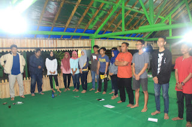
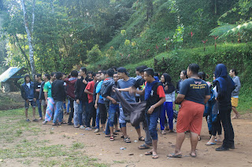
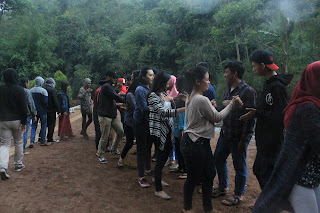

Daftar Agenda
Kegiatan yang ada di komunitas Study Club Pengen Sukses ini antara lain :
Dari Divisi Pendidikan
- Mengajar anak anak di daerah Keraton, tepatnya di Stadion Keraton, Pekaongan bersama Komunitas KSA setiap hari Jumat.
- Melakukan Study Club ataupun belajar bersama apabila ada tugas ataupun menjelang ujian, baik UAS maupun UTS.
- Meningkatkan kesadaran anggota tentang pendidikan.
Dari Divisi Ekonomi
- Mengadakan Ekman (ekonomi mandiri) di dalam komunitas tanpa memikirkan kepentingan pribadi tetapi untuk kepentingan komunitas.
Pernah mengadakan :
- Cuci Helm
- Membuat Sate Taichan, yang sedang dilakukan dan ditekuni saat ini dengan nama “Sate Taichan PS”.
- Dan sedang membuat varian menu baru, tunggu saja louncingnya yaa
Dari Divisi Organisasi
- Mengkoordinasi semua anggota di dalam komunitas
- Menyatukan semua anggota komunitas.
- Menyusun agenda bersama.
- Dll.
Menyanyikan lagu Indonesia Raya
Diskusi
Menyanyikan lagu Darah Juang dan Mars Mahasiswa
Diskusi
Fun Game
Ucapan Selamat